-
First small-scale Electirc cars
Horse and buggies are the primary mode of transportation, but innovators in Hungary, the Netherlands and the U.S. think to the future, creating some of the first small-scale electric cars.
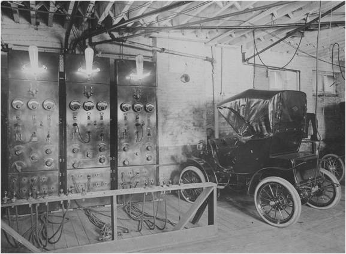 -
First Crude Electric Vehicle Is Developed
Around 1832, Robert Anderson develops the first crude electric vehicle, but it isn't until the 1870s or later that electric cars become practical. Pictured here is an electric vehicle built by an English inventor in 1884.
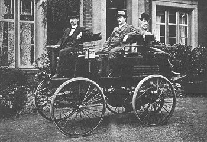 -
First Electric Vehicle Debuts in U.S.
William Morrison, from Des Moines, Iowa, creates the first successful electric vehicle in the U.S. His car is little more than an electrified wagon, but it sparks an interest in electric vehicles. This 1896 advertisement shows how many early electric vehicles were not much different than carriages.
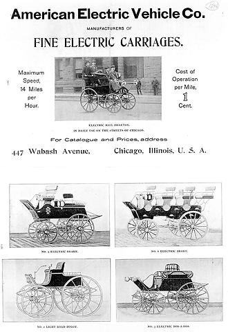 -
World's First Hybrid Electric Car Is Invented
Ferdinand Porsche, founder of the sports car by the same name, creates the Lohner-Porsche Mixte -- the world's first hybrid electric car. The vehicle is powered by electricity stored in a battery and a gas engine.
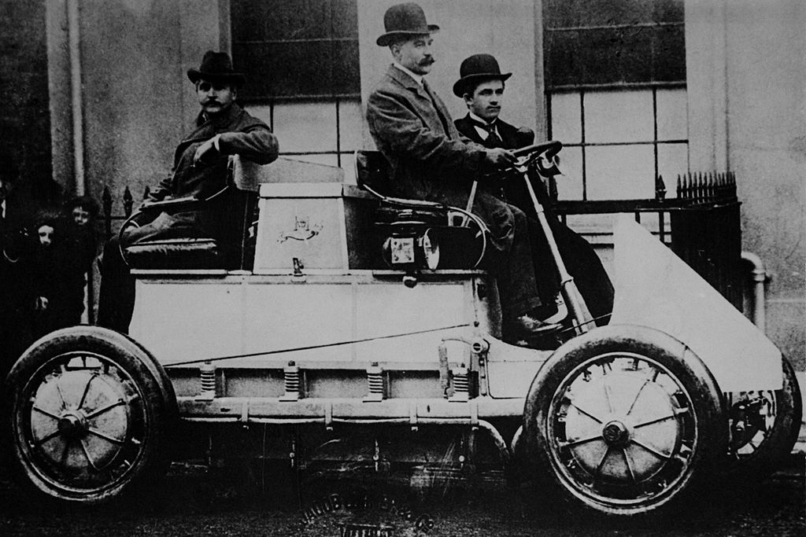 -
Model T Deals a Blow to Electric Vehicles
The mass-produced Model T makes gas-powered cars widely available and affordable. In 1912, the electric starter is introduced, helping to increase gas-powered vehicle sales even more. Pictured here is Henry Ford with the first Model T and the 1 millionth.
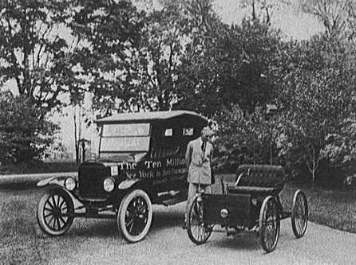 -
Decline in Electric Vehicles
Better roads and discovery of cheap Texas crude oil help contribute to the decline in electric vehicles. By 1935, they have all but disappeared. Pictured here is one of the gasoline filling stations that popped up across the U.S., making gas readily available for rural Americans and leading to the rise in popularity of gas-powered vehicles.
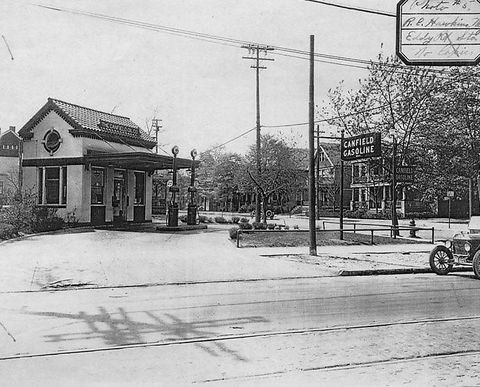 -
Gas Prices Soar
Over the next 30 years or so, cheap, abundant gasoline and continued improvement in the internal combustion engine created little need for alternative fuel vehicles. But in the 1960s and 1970s, gas prices soar through the roof, creating interest in electric vehicles again.
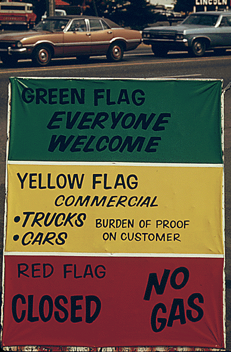 -
Over the Moon with Electric Vehiclese
Around this same time, the first manned vehicle drives on the moon. NASA's Lunar rover runs on electricity, helping to raise the profile of electric vehicles.
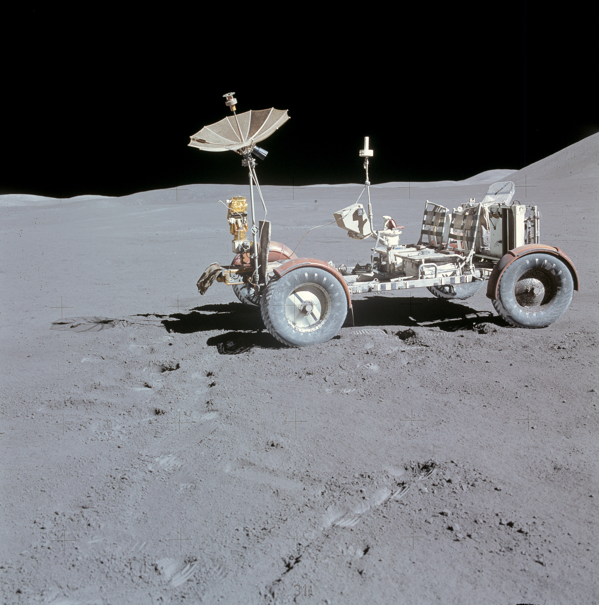 -
Leader in Electric Vehicle Sales
One successful electric car at this time is Sebring-Vanguard's CitiCar. The company produces more than 2,000 CitiCars -- a wedge-shaped compact car that had a range of 50-60 miles. Its popularity makes Sebring-Vanguard the sixth largest U.S. automaker by 1975
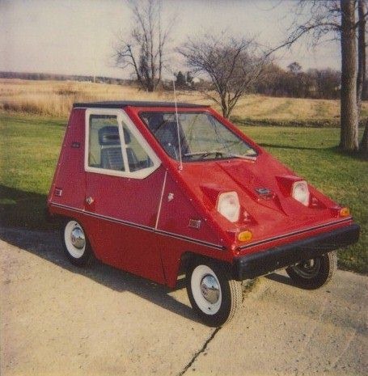 -
First Mass-Produced Hybrid
Toyota introduces the first mass-produced hybrid, the Prius. In 2000, Toyota releases the Prius worldwide, and it becomes an instant success with celebrities, increasing its (and the electric vehicle's) profile.
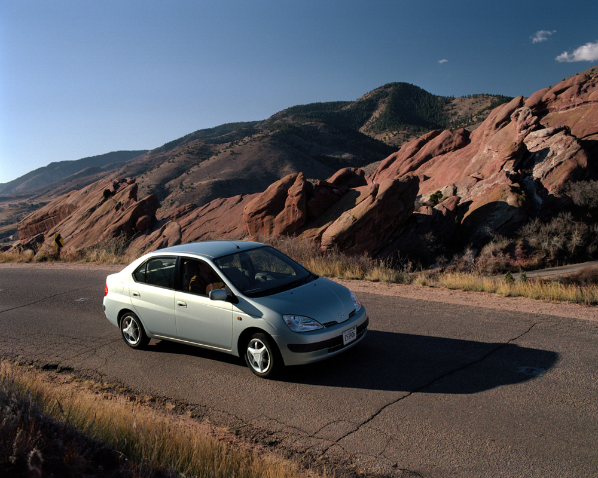 -
Silicon Valley Startup Takes on Electric Cars
Tesla Motors, a Silicon Valley startup, announces it will produce a luxury electric sports car with a range of 200+ miles. Other automakers take note, accelerating work on their own electric vehicles.
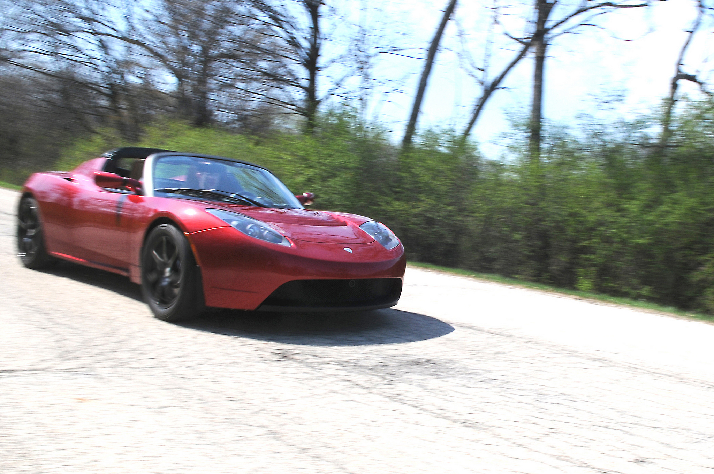 -
Developing a Nation-Wide Charging Infrastructure
To help consumers charge their vehicles on the go, the Energy Department invests in a nation-wide charging infrastructure, installing 18,000 residential, commercial and public chargers. Including chargers installed by automakers and other private companies, today there are 8,000 public charging locations in the U.S.

-
First Commercially Available Plug-In Hybrid for Sale
GM releases the Chevy Volt, making it the first commercially available plug-in hybrid. The Volt uses battery technology developed by the Energy Department. Nissan Launches the LEAF
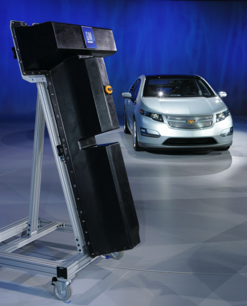 -
The Future of Electric Cars
Electric vehicles hold a lot of potential for helping the U.S. create a more sustainable future. If the U.S. transitioned all the light-duty vehicles to hybrids or plug-in electric vehicles, we could reduce our dependence on foreign oil by 30-60 percent, while lowering the carbon pollution from the transportation sector by as much as 20 percent.